Cada caminho saiu de telas e animações de verdade dos apps da coleção "High taste apps" (Airbnb, Duolingo, Opal, Wabi, CHANI, Retro, corner, Bump, Timeleft) mais Partiful e Polarsteps. Os prints e as folhas de quadros dos vídeos estão logo abaixo de cada caminho e no fim da página.
Os três mostram a mesma viagem (Lisboa, 5 pessoas, 12 a 19 de março), pra comparar só o jeito, não o conteúdo.
Abra no Chrome (duplo clique no index.html). O navegador do app do Claude deixa as animações lentas e travadas, e foi assim que o movimento do protótipo anterior não apareceu. Os celulares rodam sozinhos em laço; o botão "Segure pra topar" do caminho B também funciona com o mouse.
Fica igual: paleta Couro e laranja Fica igual: ícones Phosphor duotone e selos do @together/coreMuda: fonte, espaço, profundidade, movimento, tudo o resto
Lado a lado
Em cada caminho, à esquerda a tela da viagem (a casa do app, com as 5 partes no menu) e à direita o momento que mais importa no primeiro uso. Role pro lado se a tela for estreita.
A
Diário de bordo
Editorial e quente. Serifa grande, fotos como papéis empilhados, muito respiro. Calmo, de revista de viagem.
9:41
Sua viagem
Lisboa, com a galera
12 a 19 de março · 5 pessoas
23dias pra ir
3/5já toparam
Próximo passoVotar onde ficar
ViagemRoteiroReservasContasFotos
Viagem: fotos trocam de lugar, números contam
9:41
Quem vai com você?
Cada um recebe o link e topa sem baixar nada.
1
Chamar a galera: cada pessoa entra na fila
B
Embarque
Escuro e tátil. Um objeto-herói (o cartão de embarque da viagem) em 3D com luz, texto enxuto e gestos que dão gosto.
9:41
DEGRU
PARALIS
12 MAR · 7 NOITES
Lisboaem23dias.
3 de 5 já toparam · falta votar onde ficar
Viagem: o cartão chega girando e assenta
9:41
ANA Ana te chamou
Bora pra Lisboa com a galera?
DEGRU
PARALIS
12 A 19 MAR
Quem vai5 pessoas
Contasdivididas no app
Segure pra topar
Convite na web: segure pra topar, o carimbo bate
C
Galera
Social e vivo. A galera é o desenho: rostos em bolhas, fotos recortadas, selos como adesivos, letra gorda. Festa só nos marcos.
9:41
Lisboa
em 23 dias
12 a 19 de março · 5 pessoas
Viagem
Viagem: o que a galera fez chega em balões
9:41
Agalera topou.
0de 5 dentro da viagem
Bora montar o plano
A galera topou: rostos caem e se juntam
Comparando
A · Diário de bordo
B · Embarque
C · Galera
Sensação
Revista de viagem, calma, adulta
Objeto premium, noite antes do voo
Grupo de amigos, festa, barulho bom
Quem manda na tela
A foto do destino e o título
Um objeto 3D (cartão de embarque, passaporte)
Os rostos da galera e os adesivos
Fonte
Fraunces (serifa, itálico) + Inter
Inter Tight bem apertada
Bricolage Grotesque gorda + DM Sans
Fundo
Creme
Escuro da paleta, com luz dourada
Creme no dia a dia, dourado inteiro nos marcos
Movimento
Macio, quase sem quique
Firme, com gesto (segurar) e vibração
Com quique, física, coisas caindo e colando
Combina com o passaporte (âncora)
Bem: vira um diário/álbum da viagem
Muito: o passaporte é o objeto-herói
Bem: os selos viram coleção de adesivos
Telas de trabalho (Contas, Roteiro)
Fáceis: listas limpas em creme
Pede cuidado: lista longa no escuro cansa
Fáceis, desde que a festa fique fora delas
Esforço no Expo
Baixo: Reanimated e fotos
Médio: 3D falso com Reanimated, brilho, haptics
Médio: física simples das bolhas com Reanimated
Maior risco
Ficar bonito e quieto demais; sem foto boa fica vazio
Pesar e parecer app de banco
Virar bagunça se a festa vazar pra toda tela
Cada caminho, com as referências
As folhas de quadros são os vídeos do 60fps.design cortados em 8 momentos, da esquerda pra direita. As outras tiras são as telas reais (loja e primeiro uso) tiradas do appllama e da App Store.
ADiário de bordo
A viagem como uma revista que a galera vai montando. Título grande de serifa com uma palavra afetiva em itálico, a foto do destino manda, e o resto fica quieto. É o que Timeleft, Retro e CHANI fazem: tipografia com personalidade em cima de um fundo calmo, e o movimento serve pra mostrar o conteúdo, não pra enfeitar.
Tipografia
Títulos Fraunces 600, 40 a 56 px, com a palavra que dá emoção em itálico ("com a galera"). Números grandes também em Fraunces (60 a 96 px). Corpo Inter 15/22. Rótulos em caixa alta 10,5 px, espaçados.
Espaço
Margem de 22 a 24 px. Um bloco por vez, com 28 a 40 px de respiro entre eles. Cartão sem borda: a foto e o texto bastam.
Profundidade
Fotos como papéis empilhados, com borda branca, leve rotação e a sombra marrom grande. Folhas de baixo sobre a tela esmaecida. Sem vidro, sem brilho.
Movimento
Macio. Mola quase sem quique (Reanimated withSpring, damping 18, stiffness 160), de 350 a 600 ms. Fotos trocam de lugar, números rolam, cada pessoa entra na fila.
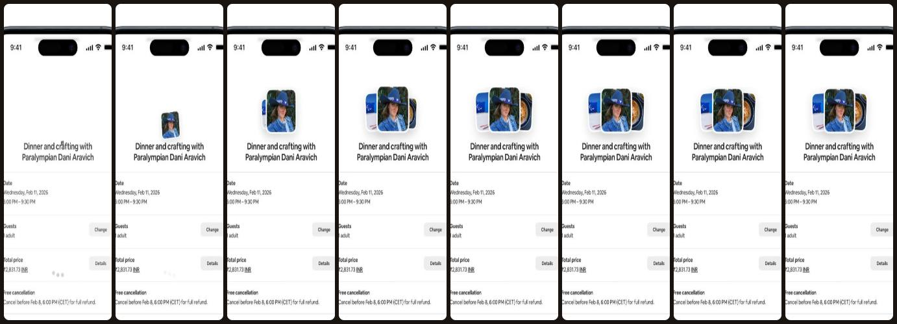
Airbnb, pilha de fotos. Tocou, a foto da frente cresce, gira e vai pro fundo. É a pilha da tela da viagem.
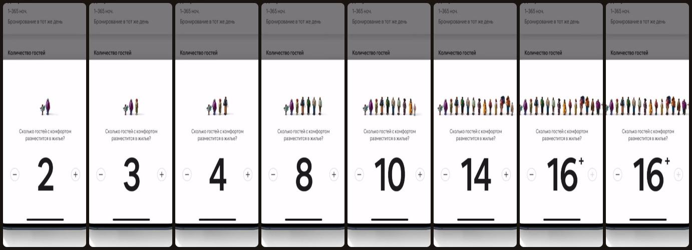
Airbnb, quantos hóspedes. Um número gigante e as pessoinhas aparecendo em cima. Vira o "Quem vai com você?".
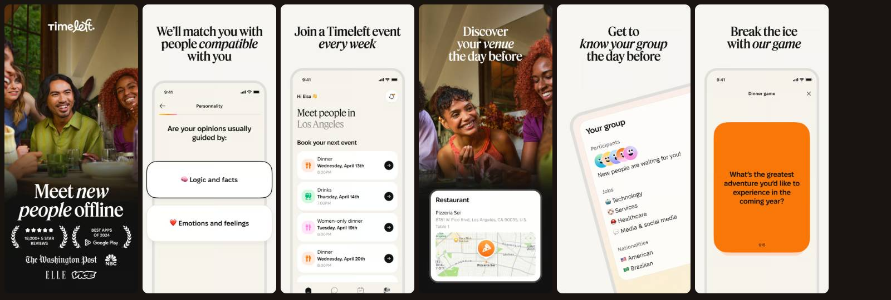
Timeleft. Serifa com itálico na palavra certa, creme, a lista de eventos limpa com um ícone colorido por linha.
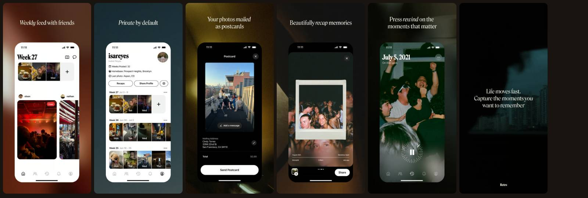
Retro. A foto manda, a serifa é pequena e elegante, as semanas viram um diário.
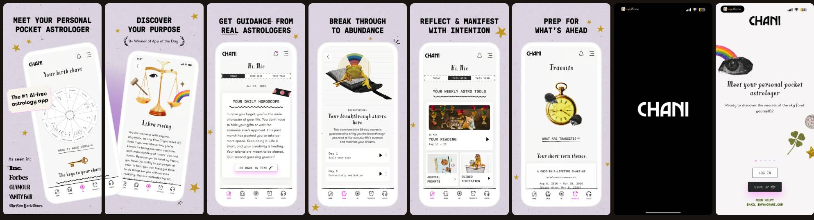
CHANI. Personalidade só com fonte e colagem de objetos reais em cima de um fundo quieto.
Onde pode dar errado: sem uma foto boa do destino a tela fica vazia, e o tom calmo pode parecer sério demais pra galera de 20 e poucos que vem do TikTok. Pede foto automática do destino desde o primeiro minuto.
BEmbarque
A viagem como um objeto que dá vontade de pegar: o cartão de embarque (depois, o passaporte da galera) em 3D, com luz dourada atrás. Fundo escuro da própria paleta, texto curto em fonte apertada, e os gestos importantes viram um ritual: segurar pra topar, o carimbo batendo. É o caminho de Opal, Revolut e Co–Star.
Tipografia
Inter Tight 800, letras bem juntas (-0,035 em), títulos de 32 a 40 px em duas linhas. Números com dígitos do mesmo tamanho. Corpo Inter 13,5 a 15, em creme a 70%.
Espaço
Um objeto-herói no centro, o texto embaixo dele, o botão preso no rodapé. Nada nas laterais. Muito escuro em volta pra o objeto brilhar.
Profundidade
3D de verdade: o cartão inclina devagar, um brilho passa por cima, luz dourada atrás. Menu de vidro escuro flutuando. Três camadas: fundo, luz, objeto.
Movimento
Firme. O objeto chega girando e assenta (stiffness 220, damping 16). Segurar enche o botão de luz e, no fim, vibra (expo-haptics) e o carimbo bate com um tranco.
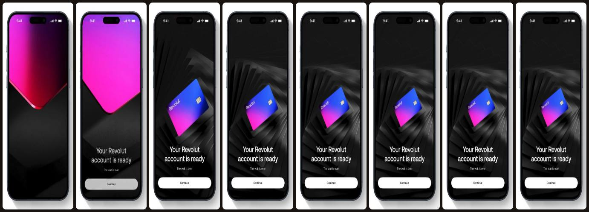
Revolut, conta pronta. O cartão chega girando sobre o escuro e a frase aparece embaixo. É a entrada da tela da viagem.
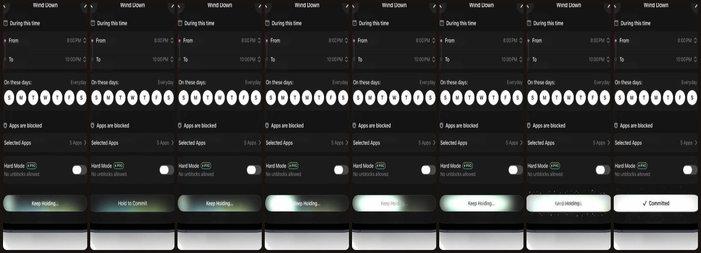
Opal, segure pra confirmar. O botão enche de luz enquanto você segura e vira "Committed". Vira o "Segure pra topar" do convite.
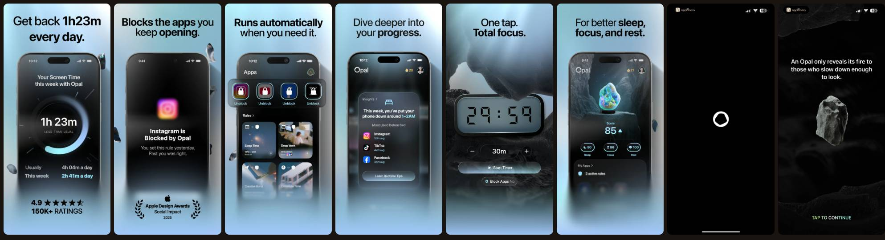
Opal. Objeto 3D no centro (a pedra), número enorme, vidro sobre o escuro.
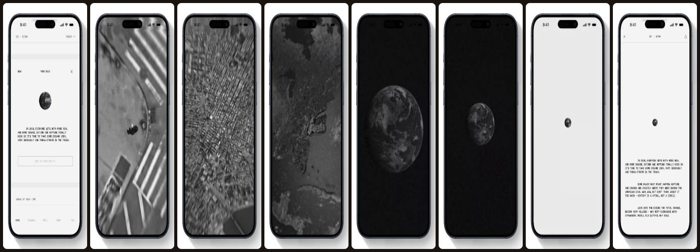
Co–Star, zoom pra fora. Da rua até o planeta num gesto. Serve pra abrir o mapa da galera (âncora).
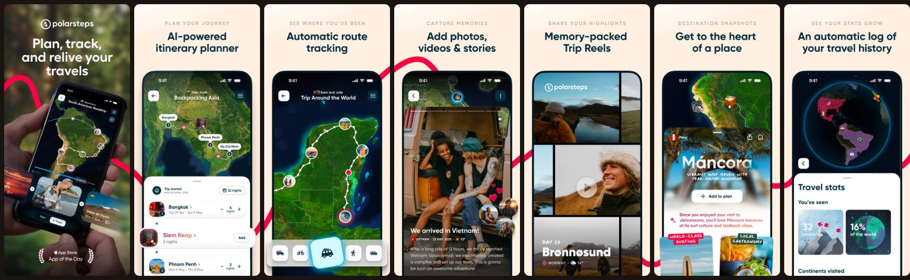
Polarsteps. Mapa escuro com a rota e as fotos presas nela; a viagem como objeto pra guardar.
Onde pode dar errado: escuro em tudo cansa nas listas (Contas, Roteiro) e pode parecer app de banco. Saída provável: escuro só nos momentos (convite, viagem pronta, carimbo) e creme nas telas de trabalho.
CGalera
A viagem como o grupo de amigos. O desenho são os rostos (iniciais e fotos), recortes e os selos como adesivos de mala. Letra gorda, frases curtas na língua da galera. É o que corner, Bump e Partiful fazem, e o que Retro e Wabi fazem com as bolhas caindo. A regra pra não virar bagunça: festa só nos marcos (topou, votou, carimbo), o resto é creme e calmo.
Tipografia
Bricolage Grotesque 800, apertada, títulos enormes e curtos (50 a 72 px: "A galera topou."). Corpo DM Sans 13,5 a 15. Nada de frase longa em título.
Espaço
Cheio de propósito: bolhas e adesivos se sobrepõem, mas só existe um texto e um botão por tela. Cartões de atividade em pilha, no máximo 3 visíveis.
Profundidade
Colagem: polaroid girada, adesivos com sombra dura e curta (3 a 6 px pra baixo, sem borrão), botão com "degrau" embaixo, como peça de brinquedo.
Movimento
Com quique e física. Bolhas caem e quicam (damping 10), adesivos colam girando, balões da galera sobem empurrando os outros. Sempre com vibração leve no marco.
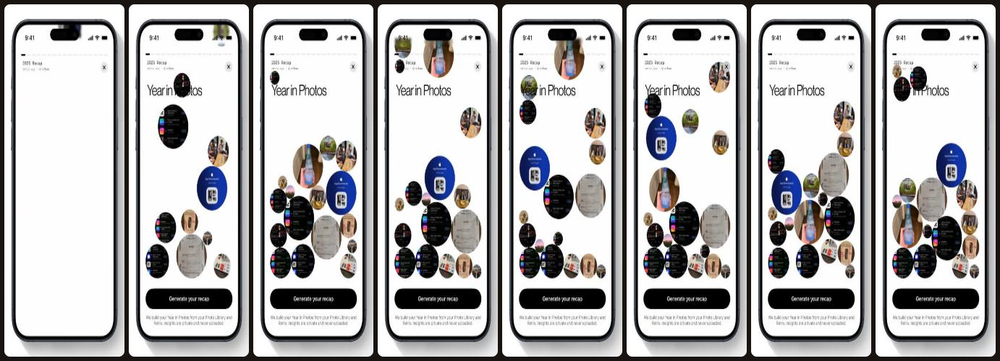
Retro, retrospectiva. As fotos caem em bolhas e se acomodam. Vira "A galera topou" e, depois, a retrospectiva da viagem.
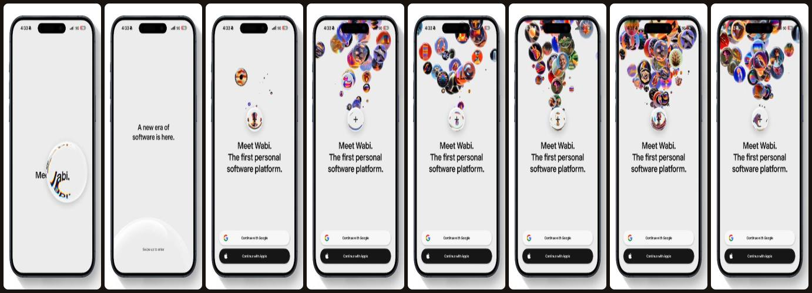
Wabi, primeira tela. Uma frase, depois uma chuva de bolhas que vira o produto. Fundo claro e limpo, só o movimento faz barulho.
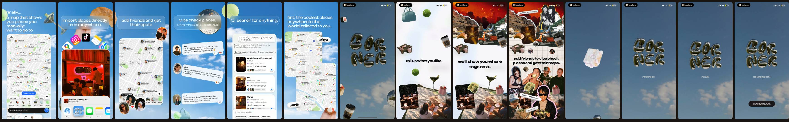
corner. Colagem de fotos reais, objetos 3D e frases minúsculas em caixa baixa. Mapa social dos amigos.
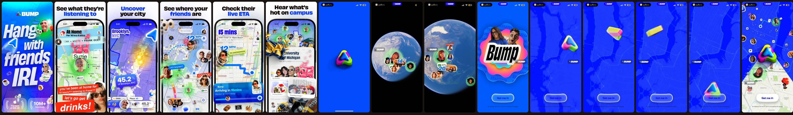
Bump. Rostos dos amigos no mapa, letra gorda, cor chapada. O grupo é o conteúdo.
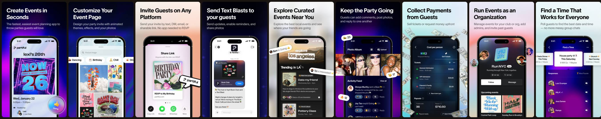
Partiful. O convite é o produto: abre sem app, tem a cara da festa, mostra quem vai.
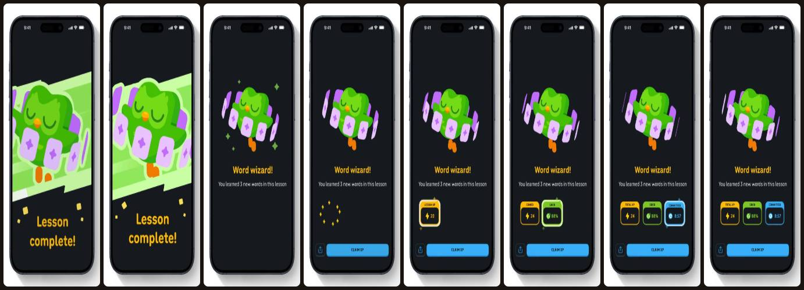
Duolingo, conquista. Os selos de resultado pulam um de cada vez. É como nossos selos devem colar.
Onde pode dar errado: é o caminho mais fácil de passar do ponto (o alerta do Kartikey: apps baratos têm cor demais e animação demais). Precisa de disciplina escrita: no máximo um momento de festa por fluxo.
Tudo o que foi visto
O resto do material, pra consulta. Todas as tiras ficam em docs/design/direcao-redesenho/refs/.
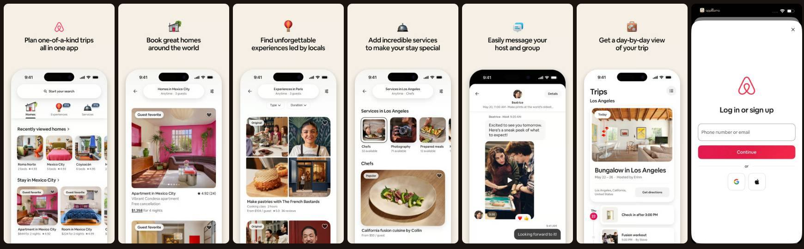
Airbnb (loja). Fundo creme, cartões de foto grandes, ícones 3D pequenos em cima de cada título. O "Trips" com o dia a dia é o nosso "Hoje".
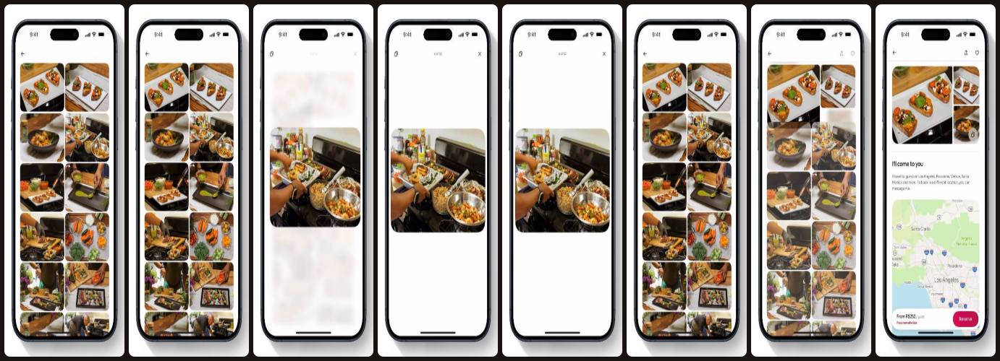
Airbnb, fotos que crescem. A foto da grade cresce até a tela cheia e volta pro lugar. Serve pras Fotos da viagem.
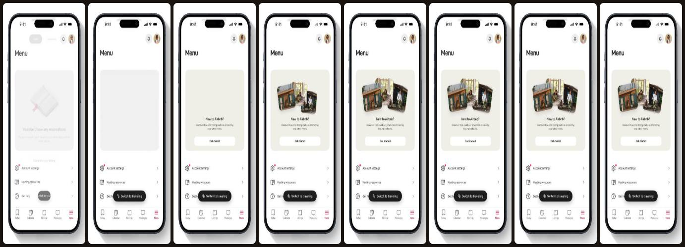
Airbnb, cartão novo. As miniaturas pulam pra dentro do cartão quando ele aparece.
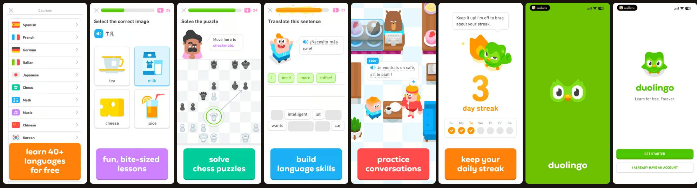
Duolingo. Um botão enorme por tela, mascote só no marco (a ofensiva), número gigante.
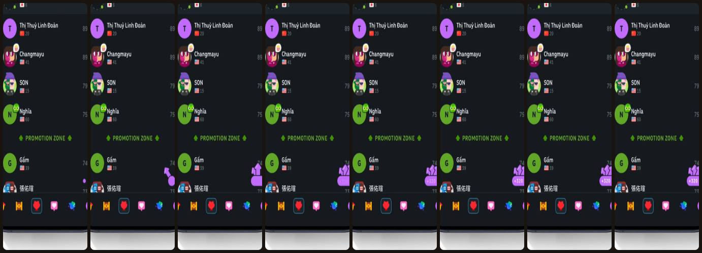
Duolingo, pontos ganhos. O botão de baixo pula quando você ganha algo.
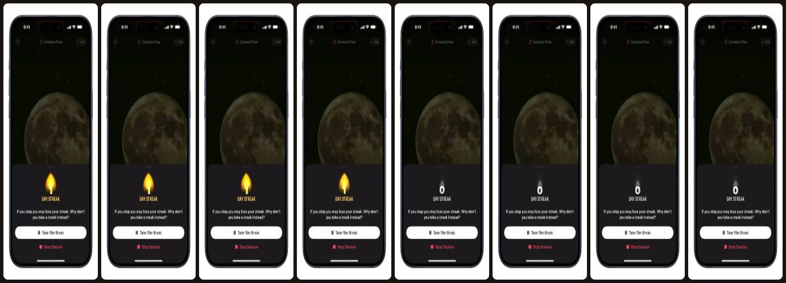
Opal, sequência. O número troca rolando, não pisca.
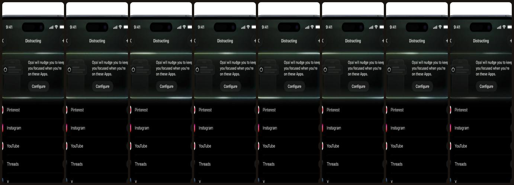
Opal, destaque. Uma borda que brilha em volta da coisa nova, no lugar de tour.
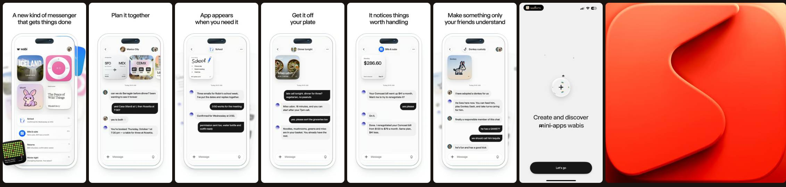
Wabi (loja). Branco, mensagens e mini apps em cartões com foto. "Plan it together" é uma conversa com a viagem dentro.
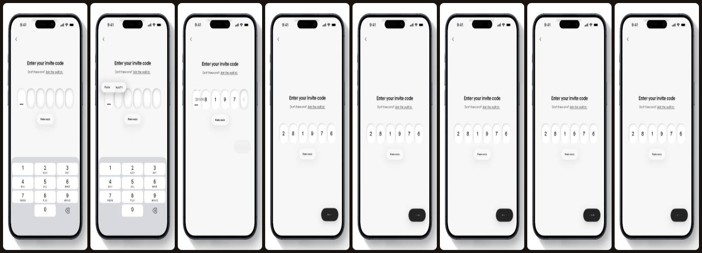
Wabi, código de convite. Caixinhas que parecem de verdade (sombra por dentro), o código cola de uma vez.
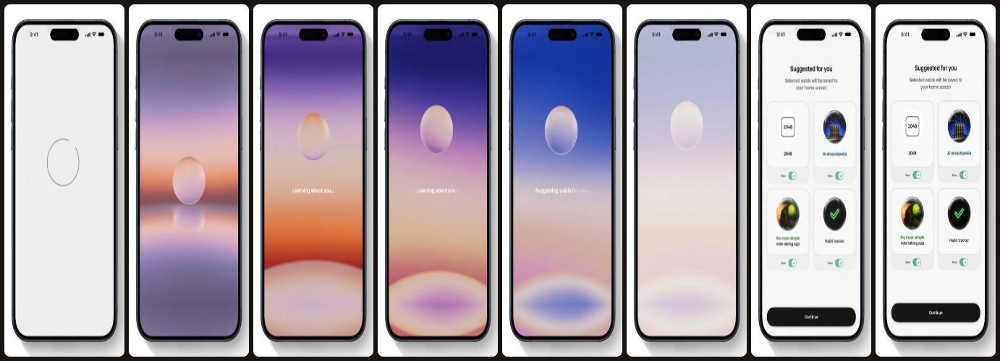
Wabi, carregando. Espera que acalma: aparece aos poucos, sem barrinha.
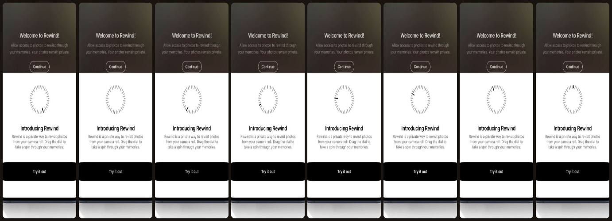
Retro, função nova. Folha de baixo com uma mini demo animada e um botão, na primeira vez que usa (o padrão "contextual" do estudo).
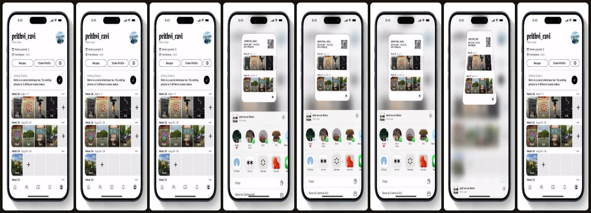
Retro, compartilhar perfil.
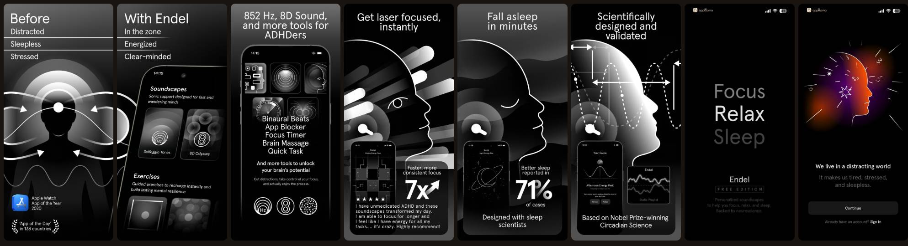
Endel. Forma abstrata em movimento, frase curta.
Sua vez, Victor
Escolha A, B ou C. Misturar também vale, desde que uma mande (ex.: "A, com o segurar pra topar do B no convite" ou "C, mas com a serifa do A").
Com a direção escolhida, o próximo passo é redesenhar as 5 partes (Viagem, Roteiro, Reservas, Contas, Fotos), o primeiro uso e o convite web, de preferência direto no Expo com Reanimated, pra o movimento ser o de verdade.